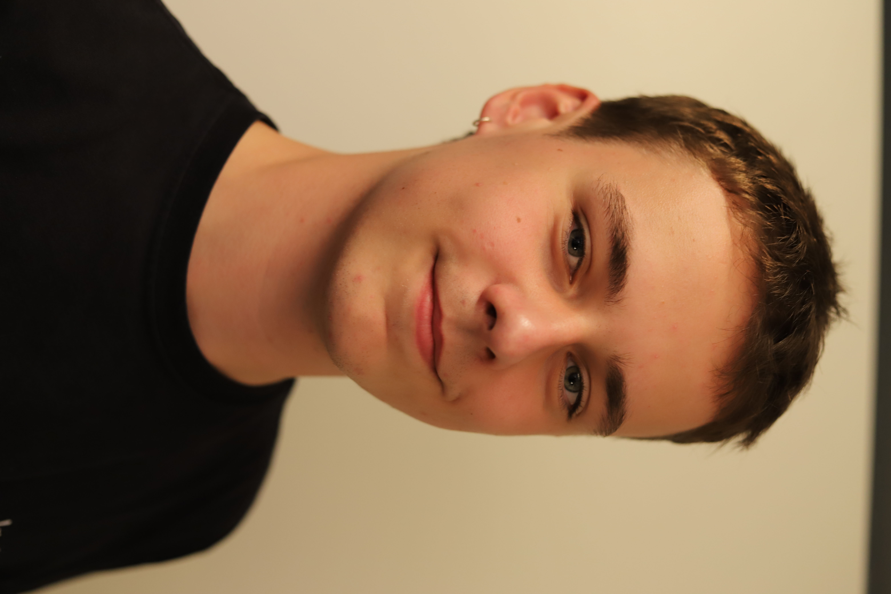

Wie ben ik?

Ik ben Xander, een gemotiveerde student met een grote interesse in technologie en IT. Momenteel verdiep ik mij in systeem- en netwerkbeheer, waarbij ik vooral geïnteresseerd ben in het onderhouden, beveiligen en verbeteren van IT-systemen en netwerken. Hoewel ik nog aan het begin van mijn opleiding sta en nog veel moet bijleren, ben ik iemand die graag nieuwe dingen ontdekt en problemen probeert op te lossen. Ik werk nauwkeurig, leer snel en geef niet snel op wanneer iets niet meteen lukt. Daarnaast ben ik sociaal, werk ik graag samen met anderen en ben ik bereid om verantwoordelijkheid op te nemen.
Mijn doel is om tijdens mijn opleiding zoveel mogelijk praktijkervaring en kennis op te bouwen. Op termijn wil ik mij ontwikkelen tot een betrouwbare IT-professional die voor verschillende taken binnen systeem- en netwerkbeheer kan worden ingezet.
Op dit moment heb ik nog geen uitgebreide lijst met behaalde certificaten, maar mijn portfolio zal mijn groei doorheen de opleiding tonen. Naarmate ik meer kennis, vaardigheden en certificaten behaal, zal ik deze hier toevoegen.